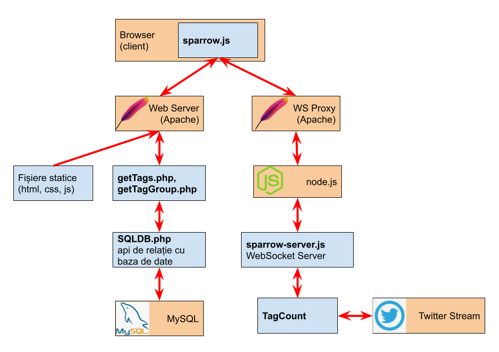

Despre acest site
Acest site este realizat pe post de proiect la materia "Tehnologii WEB", din anul 2 al facultății de Informatică din cadrul Universității Titu Maiorescu.
Proiectul își propune evaluarea și utilizarea unor modalități aparte de programare în tehnologiile WEB - websocket-uri, programare asincrona. Scopul aplicației este captarea statisticilor de apariție a diferitelor grupuri de hashtag-uri în mesajele trimise pe Twitter
Structura proiectului este următoarea:

Cu culoarea albastră sunt componentele realizate pentru această aplicație, celelalte sunt alte progame sau surse externe de informații